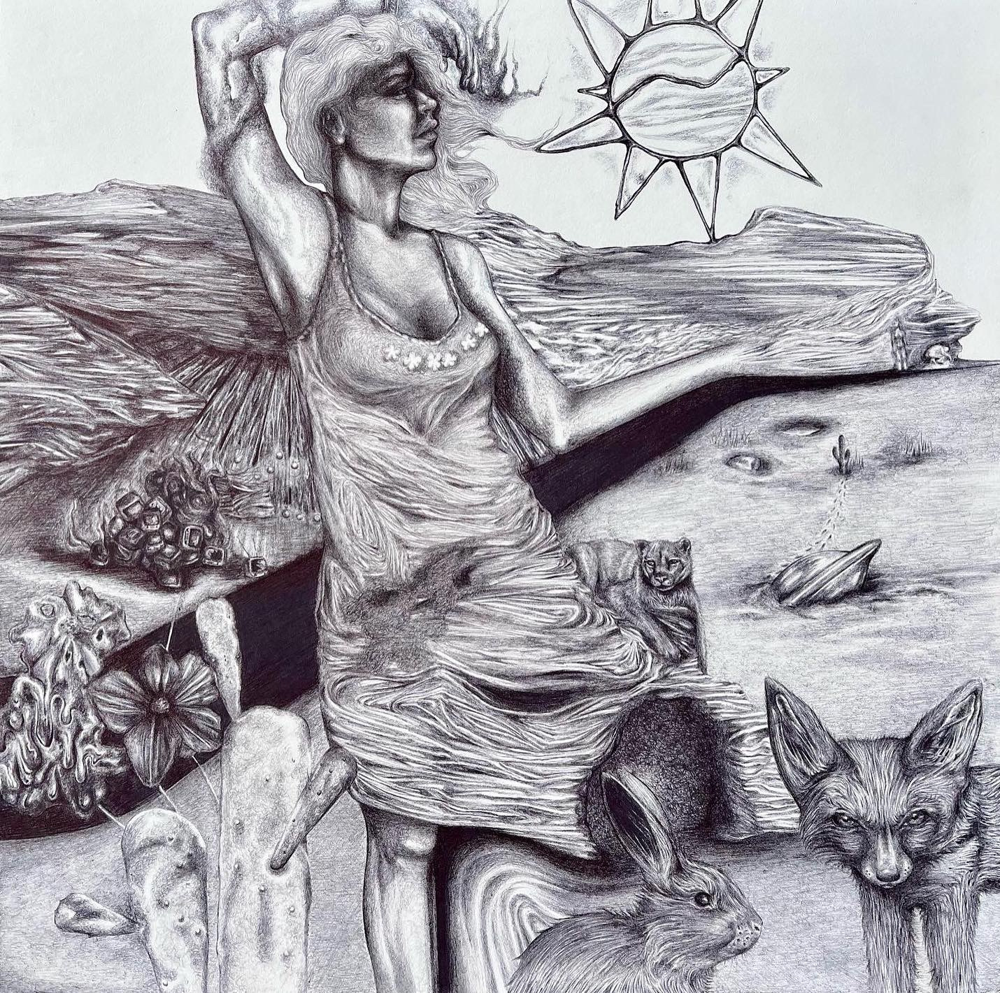

I hope to use my Web Design Master's degree to push my love for art into the digital realm. From a young age, my drawings were inspired by the nature and terrain of North Carolina.
As I've gotten older (and since moved to Florida),
my drawings often include depictions of the natural world
warping into unexpected objects or people. This defines my style, and I would love to create websites
that represent the ways in which we can contort items
so they appear to flow into one another. I have included an example of one of these images, created with bic pen.

The past four years of my life have been spent in Gainesville, Florida. Here, I've had
the honor of being an active part of the community, working as an intern, waitress, hostess, bartender, brewery
cellerman, record company designer, and muralist. I hope to continue to improve the Gainesville community by volunteering with non-profit groups.
My current job is "beertending" at a local brewery, where I've had
the opportunity to learn about beer styles and processes. As a brewery that hosts many
community events, I am able to interact with and learn from a variety of individuals.
After graduating this past fall with my bachelor's degree in Political Science
and General Business Administration, I realized I was interested in working in tech. It
is important to me that I am still able to add my own artistic flare to the sites and
digital assets I create, but I understand that the fundamentals must come first.
At 22, I feel like I have lived many lives, but I look forward to living many more.
Some things I am looking forward to:
One of the most inspirational companies for myself, in terms of their contracted artist, website design, vision, and caliber of their product: